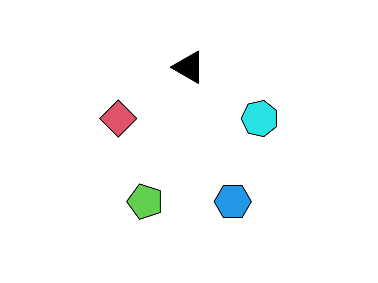
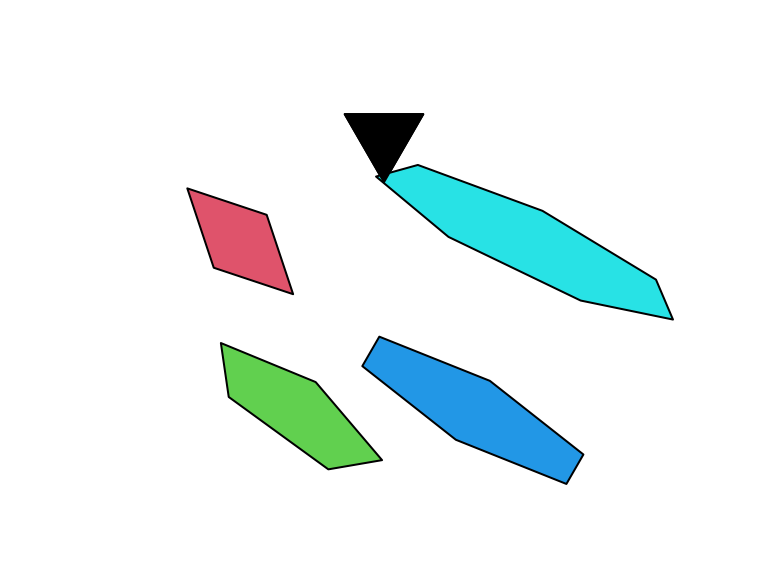

Regular polygons and ellipses in grid graphics
Baptiste Auguie
2022-12-11
ngonGrob.rmdThe gridExtra package provides a basic implementation of
regular polygons, ngonGrob()/grid.ngon, and a convenience
function to draw ellipses, ellipseGrob()/grid.ellipse(). We
illustrate below the basic usage of these vectorised functions.
Basic usage
library(gridExtra)
library(grid)
library(grid)
N <- 5
xy <- polygon_regular(N)*2
# draw multiple polygons
g <- ngonGrob(unit(xy[,1],"cm") + unit(0.5,"npc"),
unit(xy[,2],"cm") + unit(0.5,"npc"),
n=seq_len(N)+2, gp=gpar(fill=1:N))
grid.newpage()
grid.draw(g)
Rotated and stretched polygons
g2 <- ngonGrob(unit(xy[,1],"cm") + unit(0.5,"npc"),
unit(xy[,2],"cm") + unit(0.5,"npc"),
n=seq_len(N)+2, ar=seq_len(N),
phase=0, angle=pi/(seq_len(N)+2),
size=1:N+5, gp=gpar(fill=1:N))
grid.newpage()
grid.draw(g2)
Ellipses
g3 <- ellipseGrob(unit(xy[,1],"cm") + unit(0.5,"npc"),
unit(xy[,2],"cm") + unit(0.5,"npc"),
angle=-2*seq(0,N-1)*pi/N+pi/2,
size=5, ar=3, gp=gpar(fill=1:N))
grid.newpage()
grid.draw(g3)